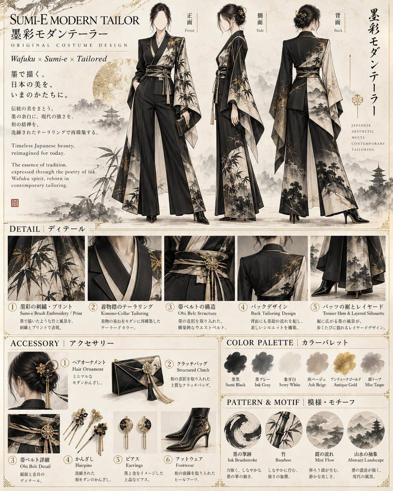

Indigo Denim Street Outfit Design
WRD-014WardrobeGPT Image 2by megumix@AIartOctober 8,

Detailed prompt for generating a Japanese indigo denim street outfit with kimono elements.
Prompt
Dress the person in the reference image in this exact Japanese indigo denim street outfit, preserving their face and hairstyle. Cropped dark-indigo kimono jacket with a deep overlapping collar, wide three-quarter sleeves, sashiko stitching, floral prints and patchwork panels. Back: fully covered cropped denim jacket with structured seams, embroidered white flowers and broad kimono sleeves. Wide embroidered obi belt with brass rings and hanging tassels. Replace any skirt with full-length, extremely wide-leg denim hakama trousers reaching the shoes, featuring layered asymmetrical fabric panels, raw frayed hems, faded indigo patches, white wave and geometric motifs. Long side drapes extend from the waist. Black inner top, chunky black platform boots, indigo hair ornaments, tassel earrings and embroidered shoulder bag. Full-body fashion portrait, not a design sheet.
Tags: 35mm film, fashion, portrait, reference image